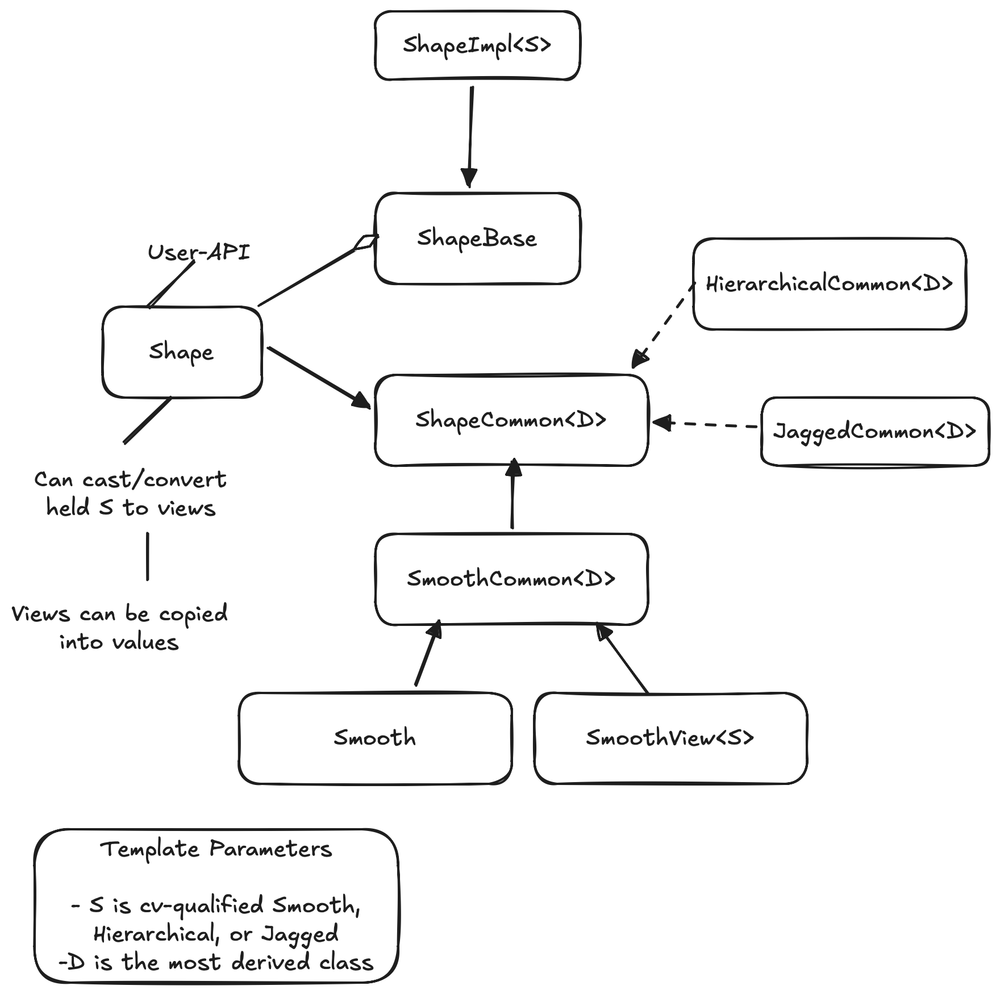

Tensor Shape Design
This page captures the design process of TensorWrapper’s Shape class.
What is a tensor’s shape?
For computing purposes, tensors are really nothing more than a bunch of floating point values and meta-data associated with those values. Conceptually, the floating point values are typically arranged into \(n\)-dimensional rectangular arrays, where \(n\) is the number of mode s in the tensor. A tensor’s shape describes this hyper-rectangular array’s layout.
Why do we need a tensor’s shape?
A tensor’s shape is arguably the most primitive meta-data associated with the tensor. Without the shape of the tensor we do not know how to access elements or lay them out in memory.
Shape Considerations
- Basic operations
The unifying theme of objects in the shape component is that they describe the layout of the hyper-rectangular array of values. This means they need to represent:
- Nested
While a nested tensor may seem exotic, in practice, distributed tensors are often implemented by nesting (ideally the user need not be aware of such nesting aside from possibly specifying it at construction). Nesting, also occurs naturally when discussing sparsity.
While nestings can be flattened (e.g., a smooth matrix of matrices can just be treated as a rank 4 tensor and a smooth matrix of jagged matrices can be treated as a single jagged rank 4 tensor) doing so destroys the mode partitioning information.
Mode partitioning information is needed for providing hints to the backend pertaining to slicing operations and hierarchical memory layouts.
- Jagged-ness
A truly jagged shape (one where slices along the same mode have different shapes) require special treatment.
Requires the tensor be at least rank 2 to be truly jagged.
Must have smooth slices of at least rank 1, but could have higher-rank smooth slices, e.g., a jagged rank 3 tensors could have smooth matrices as elements.
A jagged tensor of rank \(r\), which has smooth slices of rank \(s\) must minimally be viewed as having \(r-s\) layers
A key use of jagged shapes is for tiling tensors.
Another use of jagged shapes is for when you do not want to pad a mode (add zeros for unused basis functions). Put another way, in theory, a jagged shape can always be turned into a smooth shape by introducing padding; however, doing so may have performance complications if the number of padding elements is significant.
- Combining shapes
As we do tensor operations we will need to work out the resulting shapes. This in general requires knowing how the modes of the inputs map to the modes of the output.
- Iterable
A natural use case of a shape is to iterate over the indices in the shape.
For iterating, it is useful to be able to set the origin. This allows iterating over slices using the original tensor’s indices.
Sometimes we want the absolute indices (starting from the origin) and other times we only want the offsets (always relative to zero).
Not in Scope
- Sparsity
The
Shapecomponent is targeted at describing the conceptual layout of the hyper-rectangular array of values. The conceptual layout is independent of the values of the elements. Sparsity is concerned with knowing which elements are zero.Sparsity is punted to Tensor Sparsity Design.
- Permutational Symmetry
In many cases the elements of a tensor are not all linearly-independent and optimizations are possible by avoiding redundant computation.
Antisymmetry, Hermitian, and anti-Hermitian all fall into this consideration too.
Symmetry is punted to Designing the Symmetry Component.
- Logical vs physical
See Logical Versus Physical: Understanding the Tensor Layout for a full description, but the point is that the user may declare a tensor to have a shape different from how the tensor is actually stored.
Both the logical and actual shapes are
Shapeobjects.It is the responsibility of the user creating
Shapeobjects to track if they represent logical or actual shapes.
- Masks
Shapes are index contiguous. Masks allow you to view a non contiguous set of indices as if they were contiguous. Masks can be implemented on top of the shape component and are therefore not in scope for this discussion.
- Memory allocation.
The shape simply describes the hyper-rectangular array of values, it does not allocate memory for those values. Allocating memory is the responsibility of the allocator component (see Designing the Allocator).
Shape Design
TODO: Express better.
Note
This is a proposal. It has not been fully implemented yet.
The last design, Shape V1 Design had problems:
Passing things around as
ShapeBaseinvolved holding pointers and needing to downcast them. Pointers are “unnatural”.There was a lot of code duplication between the view and value objects.
Developers had to manually synchronize the APIs of views/values, i.e., there was no check to ensure they interfaces remained equivalent.
Trying to introduce code factorization became difficult because the value inherited from
ShapeBase, but the views didn’t.Exposing the actual polymorphic objects meant users had to be careful to not slice the objects.

Fig. 6 The architecture of TensorWrapper’s Shape component.
What this design changes:
Moves to a “type-erased” architecture.
Uses CRTP to factor out common APIs.
Better separation of user-API and performance details.